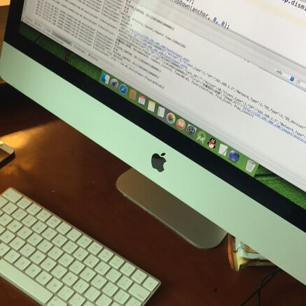

后台布局
控制台
商品管理
用户
其它系统
邮件管理
消息管理
授权管理
 资深码农
基本资料
安全设置
退了
所有商品
列表一
列表二
列表三
超链接
解决方案
列表一
列表二
超链接
云市场
发布商品
内容主体区域
商品管理
商品管理
权限分配
商品管理
订单管理
内容不一样是要有，因为你可以监听tab事件（阅读下文档就是了）
添加
商品名称
品牌
价格
产地
修改
删除
明细
内容2
内容不一样是要有，因为你可以监听tab事件（阅读下文档就是了）
内容4
内容不一样是要有，因为你可以监听tab事件（阅读下文档就是了）